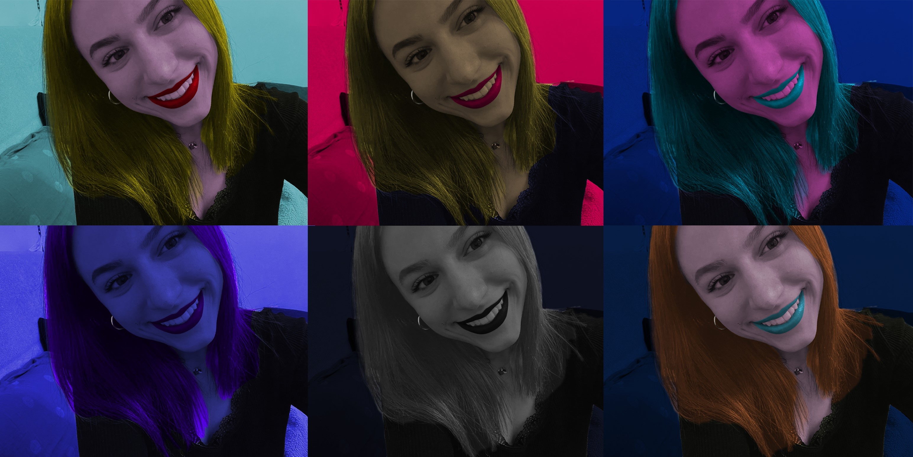
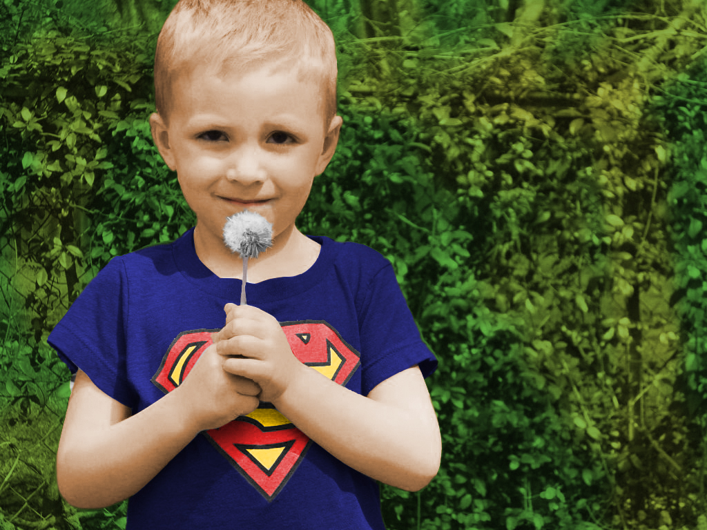

Ovdje možete pronaći vježbe, radove i projektne zadatke koje sam radila tokom semestra na kolegiju Digitalni multimedij 1.
- proces izrade fonta, crtanje slovnih znakova unutar četverca, spremanje fonta,
generiranje, preuzimanje ttf fonta na računalo te isprobavanje fonta
- izrada Bezierove krivulje, prepravljanje krivulje,
interpolacija, izrada maske
- izrada multipliciranih objekata alatom "Pen", korištenje rotacije,
scale, transparencije, multipliciranje objekata
- izrada složenih objekata sastavljenih od nekoliko staza pomoću
metoda spajanja ili razdvajanja oblika, primjenjivanje različitih
vrsta gradijenata (od dvije ili više boja)
- precizno crtanje u vektorskoj grafici, korištenje Bezierove krivulje, bojanja, transformacija
interpolacija, izrada maski i slojeva, korištenje gradijenata s ciljem rekreiranja zadane fotografije
- korištenje selekcija pomoću Lasso Toola, lokalne i globalne korekcije boja pomoću
Burn i Dodge Toola, uklanjanje nedostataka pomoću zamućivanja (Dust & Scratches Toolom),
kloniranja (Clone Stamp i Healing Brush) te kopiranjem selekcija u slojeve (Layers)

- koloriranje/dodavanje boje slici, promjena slike iz crno-bijele u sliku u boji
 - kombinacija nekoliko različitih fotografija pomoću izrezivanja i ljepljenja
istih u jednu cjelinu pomoću različitih tehnika selektiranja
- uklapanje različitih elemenata u jednu cjelinu, uređivanje zasebnih elemenata fotografija
pomoću retuširanja, koloriranja i fotomontaže
- obrada videozapisa kao kinemagraf (spajanje pokretne i statične grafike,
najčešće u GIF formatu)


- spajanje različitih videozapisa, dodavanje zvuka, prijelaza i filtera u obradi
- kreiranje web stranice pomoću HTML-a i stiliziranje iste u CSS-u
Moj Github repozitorij